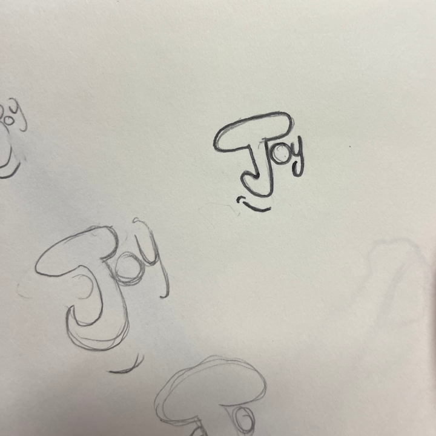

Présentation
Une banque fictive pour les étudiants.
Devoir universitaire : créer l'identité visuelle d'une banque en ligne fictive. Avec mon binôme, nous avons choisi de cibler les étudiants et d'imaginer Joy, une banque pensée pour eux, proposant notamment des réductions sur les voyages. Nous avons développé ce concept de A à Z : du nom à l'univers graphique, en passant par le logo.


Mon rôle
Vectorisation & univers visuel.
Je me suis principalement chargé de la vectorisation du logo, à partir d'un croquis réalisé par mon camarade. J'ai mis au propre toute la partie graphique sur les outils numériques en respectant l'esprit du dessin initial. J'ai également participé aux choix des couleurs : le jaune, choisi en lien direct avec le nom Joy, reflète l'optimisme, l'énergie et la jeunesse.
Matériel & outils
Du croquis au mockup.
Travail traditionnel d'abord : plusieurs croquis sur papier pour explorer les idées. Vectorisation et finalisation du logo sur Adobe Illustrator. Mock-ups et supports de communication sur Adobe Photoshop.

Résultat